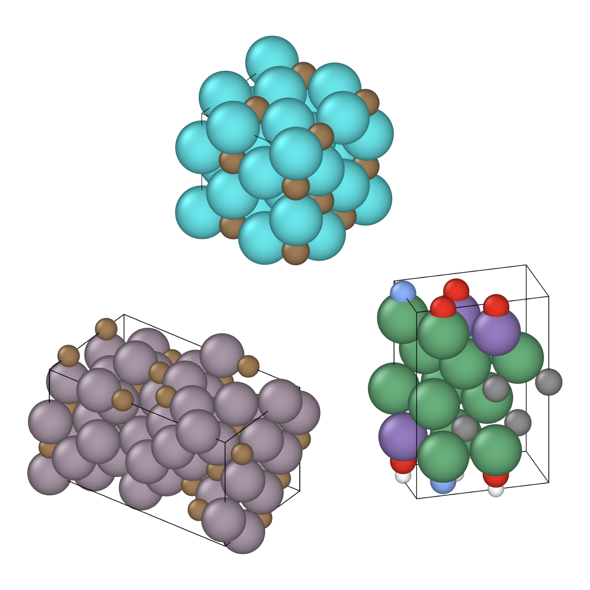

Interstitial-type alloys are characterised by small atoms distributed pseudo-randomly across the crystal lattice of larger atoms. This pseudo-random arrangement presents a unique challenge for machine learning models and explainability algorithms — one that is the focus of this research.